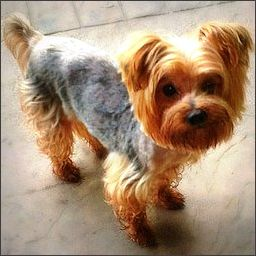

3 anos
Macho
Jandira
Macho
Jandira
YAN
Yan é um cão de porte pequeno, pesa 3,2 kg, ou seja, é um cão facilmente adaptável tanto em casa quanto em apartamento. Seu pêlo é longo, liso e sedoso, de coloração castanha na cabeça e azul aço escuro no restante do corpo.
Apesar de seu pouco tamanho, o Yan é um cãozinho cheio de energia! Ele é muito atento, podendo se tornar um bom cão de alarme.
Ele é muito inteligentes e apegado à família. Gosta de acompanhar os donos em tudo o que fazem
Entre em contato com:
Jamires da Silva
(11) 989079876